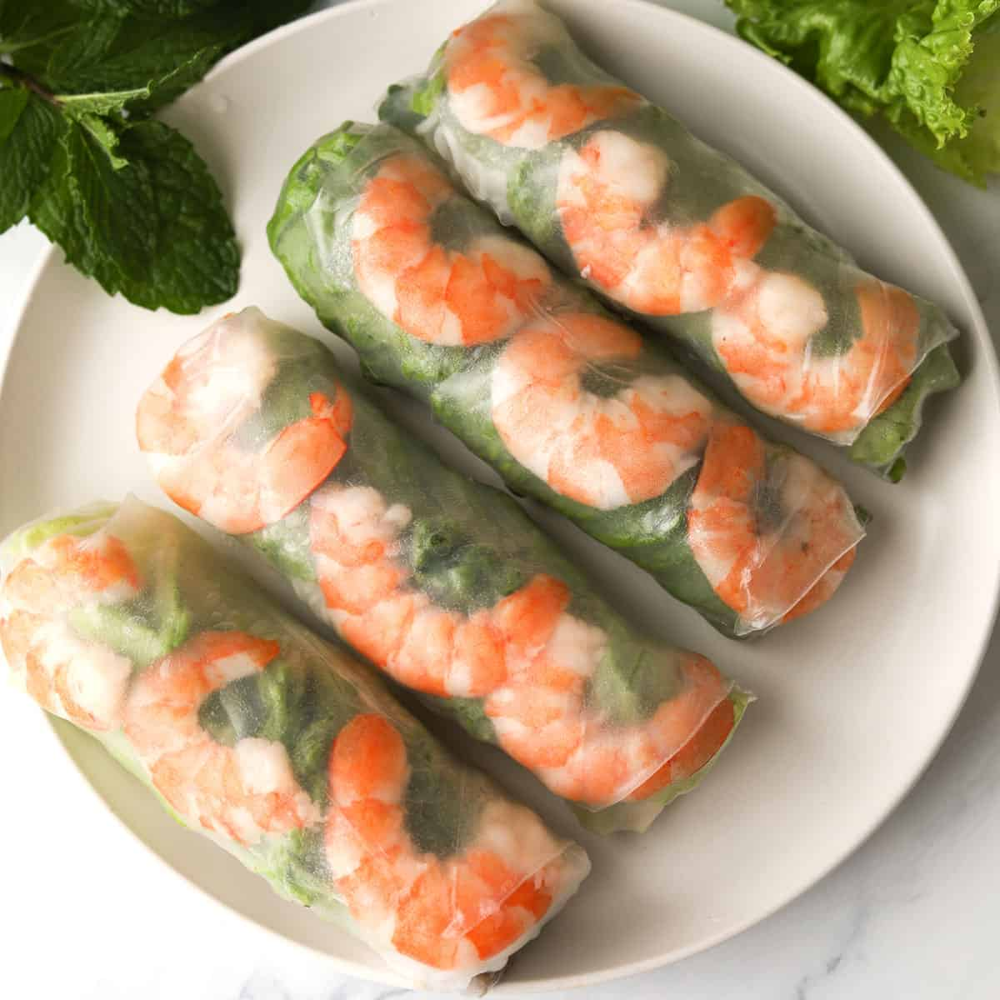

Spring Roll

The vietnamese spring roll can be eaten as an appetizer or even the full meal depending on the setting.
For parties, it's usually layed out and eaten as an appetizer before the entree.
As an at home meal, the rolling process is done directly at the dining table and eaten as the full meal.
Required Ingredients:
- Rice Paper
- Shrimp
- Lettuce
- Rice Vermicelli
Optional Ingredients:
- Pork Belly
- Bean Sprouts
- Mint
- Green Onions
The reason I separated the ingredients into required and optional is because traditional spring rolls are made with all of those ingredients.
But, barring that you don't have the items from the optional list, you can still make a spring roll that tastes full.
Sauce Ingredients:
- Peanut Butter
- Hoisin Sauce
- Cow's Milk
With the ingredients laid out, it's time to make the spring rolls.
Steps:
- Boil the Shrimp and vermicelli in separate pots, if you have the optional pork belly you can also boil that in a separate pot and then sliced thinly.
- Lightly wet the rice paper in warm water, this is easily achieved by having a plate with a raised edge and dipping the rice paper into it flat.
-
Assemble with shrimp first, followed by lettuce, and finished with vermicelli, so you'll have the shrimp facing outwards to make a pretty spring roll.
If you have the optional ingredients, then you can stagger the shrimp and the pork belly one after the other, and include the bean sprouts and green onion after the lettuce.